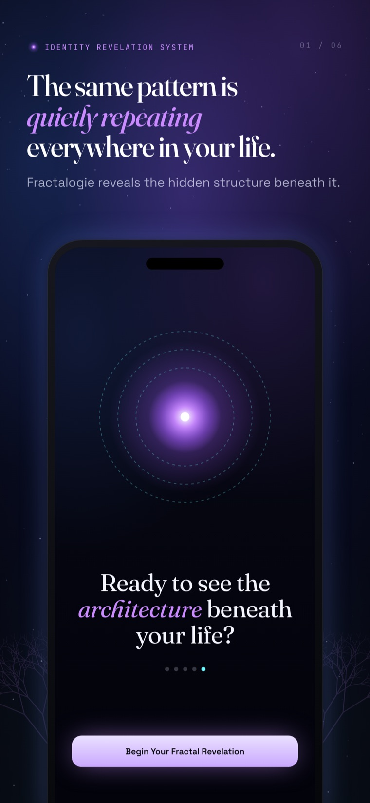

A quiet idea sits underneath everything Fractalogie does: the situations that keep returning aren't accidents of circumstance. They are the visible surface of a structure — and a structure can be seen.
Repetition is structural, not random. When the same argument, the same exit, the same silence keeps arriving — through different people, different years, different lives — that's not bad luck accumulating. It's a system doing exactly what it was built to do.
A pattern that repeats this reliably isn't a flaw in the machine. It is the machine. The scene returns because returning keeps something intact.
Nothing you do twice is meaningless. Each pattern preserves stability and minimises emotional exposure — it spends the least possible energy to keep you safe from a feeling you'd rather not meet head-on.
That's why patterns are so hard to "just stop." They're not mistakes to be corrected. They're elegant solutions to a problem you may have never named — solutions that work, at a price.

The same structure shows up in your relationships, your money, your body, your work, your sense of who you are. Zoom out from one and you'll find its twin somewhere else — the same loop wearing a different costume.
This is the fractal: not many separate problems, but a single structure echoing at every scale of a life. Solve it as five problems and it regrows. See it as one shape and it finally holds still.
Identity behaves like an attractor: a centre of gravity that pulls events back into a familiar orbit. Whatever you've decided you are, reality keeps getting arranged to confirm it — because being consistent feels safer than being free.
Awareness destabilises patterns. The moment a loop is seen clearly — its trigger, its reaction, the emotion it guards, the price it charges — it loses some of its automatic grip. You can't run the same program quite the same way once you've watched it run.
But let's be honest about the limit: understanding is not transformation. Insight isn't a cure. Naming the structure is the beginning, not the end — it's what makes change possible, not what guarantees it.
Fractalogie does not motivate you. It does not moralise, prescribe affirmations, or hand you a five-step plan. There is no self-help voice telling you to think positive or try harder.
It reflects — precisely, patiently, one thread at a time — until the structure underneath becomes visible to you. A mirror doesn't tell you what to do with what you see. It simply refuses to look away first.
Everything above, distilled into the principles the app follows on every scan.
Not the problems it produces. The problems are output; you are the system.
The scene returns because returning protects something you haven't yet named.
It preserves stability and minimises exposure — an elegant solution, at a cost.
The same loop repeats across love, money, body, work and identity.
Precise awareness destabilises the loop — though understanding is not yet transformation.
Fractalogie is a tool for self-reflection. It is not therapy, not medical or psychological treatment, and not professional advice of any kind. It does not diagnose, treat, or cure anything, and it is not a substitute for a qualified professional.
It is also not a crisis service. If you are in distress, struggling with your mental health, or thinking about harming yourself, please don't rely on an app — reach out to a qualified professional, someone you trust, or your local emergency services right away.
What Fractalogie offers is a clear, calm mirror. What you choose to do with what it reflects is yours, and yours alone.
Name one situation that keeps repeating, describe a single moment of it, and watch the shape underneath surface. Your first scan is free — no account, no tracking.